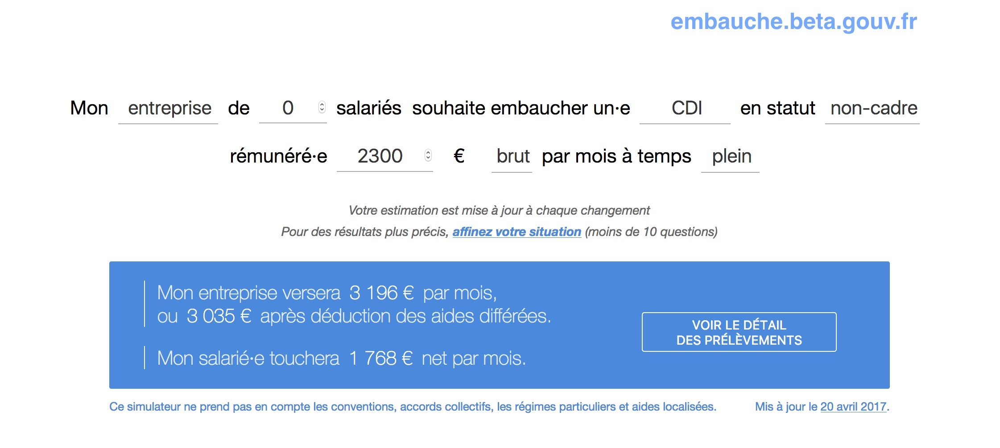

Evaluate reforms impact
Compare law as it is now and as it could be.
See this publication (in french)
of the French Movement for a Basic Income that uses OpenFisca to evaluate a reform introducing a basic income in France.

From an individual situation, calculate any variable of a national tax and benefit system. See Mes Aides that uses the OpenFisca Web API to calculate OpenFisca-France benefits.
Model any kind of entity and evaluate their eligibility to fiscal obligations and benefits. Embauche application calculates hiring costs. 
Compare law as it is now and as it could be.
See this publication (in french)
of the French Movement for a Basic Income that uses OpenFisca to evaluate a reform introducing a basic income in France.